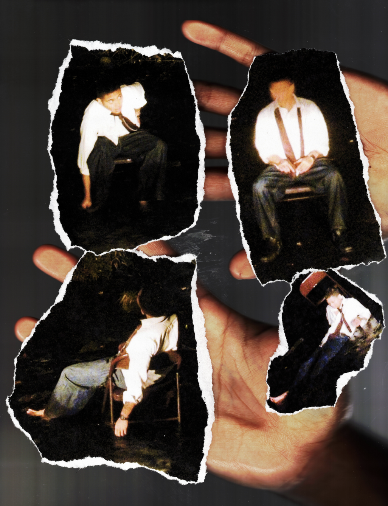

email inquiries: lonielmusic@gmail.com
instagram
subvert.fm
bandcamp
LONIEL.
this is my website.
indie alt midwest psychadelic rnb rock ish kind of sound. FKA BOZOBABY
presave "tips"
media
1 / 6
when i write back
2 / 6
when i write back
3 / 6
when i write back
4 / 6
when i write back
5 / 6

when i write back
6 / 6
when i write back
❮
❯